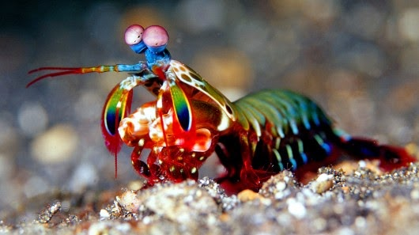

Fatos sobre o Stomatopoda
Conheça-o melhor!
Stomatopoda, Odontodactylus scyllarus, chamados popularmente de tamarutacas ou de lacraias-do-mar no Brasil, é uma ordem de crustáceos marinhos da subclasse Hoplocarida, que agrupa cerca de 400 espécies, caracterizadas principalmente pela morfologia da segunda pata torácica, que é modificada em apêndice subquelado, lembrando uma pata de louva-a-deus.
| Reino: | Animalia |
|---|---|
| Filo: | Arthropoda |
| Subfilo: | Crustacea |
| Classe: | Malacostraca |
| Subclasse: | Hoplocarida |
| Ordem: | Stomatopoda (Latreille, 1817) |
Curiosidades
Boxeador
Fazendo jus a um de seus nomes conhecidos, camarão boxeador, o Stomatopoda é um excelente golpeador, ele "soca" suas presas com suas garras com uma força de até 2,5 mil vezes seu peso em menos de 800 microsegundos. Este nocaute equivale a um tiro de pistola calibre 22.
Sua visão
Estes crustáceos apresentam a melhor visão em cores do mundo. Seu sistema de visão possui doze cones sensíveis à luz e outros quatro que filtram a luz, 16 no total (humanos possuem 3). Eles conseguem detectar ondas ultravioleta e milhares de gradações. Com um mecanismo de polarização visual complexo e visão em 360 graus, são capazes de determinar profundidade e localização de objetos em três ângulos.

Referências
- Wikipedia | Stomatopoda
- Bicho Nativo | Habilidades do Tamarutaca
- Why the Mantis shrimp is my favorite new animal.